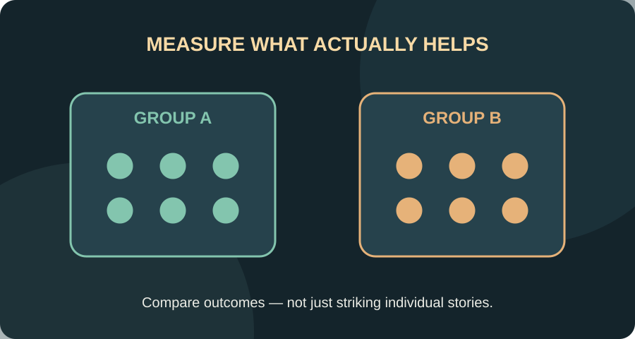

1. A strange meeting at the National Cancer Institute (1955)
In April 1955, Emil Freireich arrived at the National Cancer Institute in Bethesda, Maryland, and saw a door labeled with the name Emil Frei. He first assumed the government had shortened his own name by mistake. Instead he discovered another young physician: his new colleague.
Mukherjee makes the coincidence memorable because the two men were so different. Freireich was loud, impulsive, fiercely emotional, and impatient. Frei—often called Tom—was calm, careful, tactful, and skilled at resolving conflict. Their personalities could easily have made cooperation impossible. Instead they formed a highly productive team.
Freireich pushed daring ideas toward the edge of what doctors considered acceptable. Frei helped make those ideas workable and less reckless. Together, they represented the permanent tension between medical courage and medical caution.
2. Gordon Zubrod creates a team
Their director was Gordon Zubrod, the head of the NCI's clinical cancer research program. Zubrod had worked on antimalarial drugs during World War II, where he learned the value of organized experiments and clearly defined treatment questions.
He wanted to apply similar methods to leukemia. But there was an immediate practical problem: children were dying rapidly, and an experimental treatment could not be evaluated unless the physicians could keep patients alive long enough to observe its effect.
Zubrod recruited Frei and Freireich to manage the wards and investigate the drugs. Their combination of ambition and contrasting temperaments gave the program both energy and restraint.
3. Why independent hospitals needed to cooperate
Several cancer centers were studying childhood leukemia: Farber's clinic in Boston, researchers in New York and Buffalo, and physicians at the NCI. Each wanted to test promising drugs. But leukemia was not common enough for every institution to run every experiment independently.
Zubrod proposed a cooperative group in which institutions could share protocols, patients, clinical observations, and results. Farber chaired an early meeting, and the group agreed to test treatments using common rules.
This was revolutionary because the researchers had to surrender some independence. Instead of each hospital improvising its own regimen, many hospitals would ask the same question and collect compatible data.
In practical terms, a cooperative trial can produce more reliable findings because it includes more patients and avoids making every medical center relearn the same lesson in isolation.

4. The problem with uncontrolled treatment experiments
How could a physician know whether a drug genuinely helped? Perhaps the people given a new treatment were younger, less sick, or simply fortunate. Perhaps a physician remembered the successes and overlooked failures. Without a fair comparison, apparent progress might be misleading.
Zubrod looked to the history of antibiotics, particularly the experiments testing streptomycin for tuberculosis. The British statistician Austin Bradford Hill had helped develop a method in which patients were assigned to treatment groups by a random process rather than a doctor's judgment.
The purpose of randomization is to reduce selection bias. With enough patients, two groups are more likely to be comparable at the beginning of a trial. Differences in outcomes can then be evaluated more fairly.
| A weak comparison | A stronger randomized comparison |
|---|---|
| Doctor chooses which patients receive a new drug | Assignment follows a random method |
| Sicker or healthier people may be concentrated in one group | Important characteristics are less likely to be systematically skewed |
| Improvement might reflect the original differences | Improvement is more plausibly attributable to treatment |
| Conclusions depend heavily on belief | Conclusions can be tested against predefined outcomes |
The book treats this as a decisive shift: doctors' good intentions cannot replace reliable evidence.
5. What a clinical protocol actually does
A protocol is a detailed plan for a medical experiment. It defines who can join, what treatment each group receives, how doses are given, which problems are monitored, and how success will be measured.
Zubrod wanted trials that were systematic, sequential, and objective. Each trial would answer a limited question, and the result would guide the next trial. Instead of leaping directly to the most daring imaginable treatment, researchers would build evidence step by step.
This sounds slow—and it often was. But cancer treatments could cause severe toxicity. A protocol helped physicians distinguish promising therapy from dangerously hopeful improvisation.
6. A lesson from tuberculosis: resistance to a single drug
Doctors treating tuberculosis had learned that using just one antibiotic could allow drug-resistant bacteria to survive. When the surviving bacteria multiplied, the treatment eventually stopped working. Combinations of antibiotics could make this less likely.
Leukemia seemed to behave similarly. Farber's earliest antifolates sometimes produced remissions, but the malignant cells eventually returned. Other single anticancer drugs also produced temporary effects followed by relapse.
Frei, Freireich, and Zubrod asked: What if cancer cells were attacked with more than one drug at the same time? Different medicines might disrupt different cellular processes, making it harder for the disease to survive treatment.
There was a frightening difference, however. Antibiotics target microbes; early chemotherapy drugs also injured normal human cells. Combining them might multiply not only effectiveness but toxicity.
7. Protocol I: Testing treatment intensity
The cooperative group began with drugs already known to have activity against leukemia: methotrexate and 6-mercaptopurine (6-MP). Institutions joined a comparison of more intensive and less intensive dosing.
The study enrolled 84 patients. Parents were given sealed assignments for treatment groups, helping preserve the impartiality of the experiment.
The more intensive approach produced longer remissions, but the cost was severe toxicity. The disease still returned, and the children died within roughly a year. This was not a cure, yet the trial was a major methodological achievement.
It proved that multiple centers could coordinate a comparative cancer trial and follow the same rules, even when physicians had strong personal preferences.
8. The next trials: Two drugs outperform one
In 1957 the group studied the drugs separately and together. Given alone, methotrexate or 6-MP produced responses in only about 15–20% of children in that comparison. Used together, the remission rate rose to about 45%.
This mattered for two reasons. First, the outcome supported the hypothesis that combinations could be better than single agents. Second, the improvement came from a planned comparison—not only dramatic anecdotes.
Later trials explored whether additional chemotherapy after an initial remission could keep leukemia suppressed for longer. The answer was again promising, though relapses remained frequent.

9. Why the ward was called “the butcher shop”
These experimental regimens were extraordinarily harsh. The children already had dangerously compromised blood production. Chemotherapy could destroy their remaining healthy blood cells, expose them to severe infections, and push them near death.
Other physicians began calling the treatment area “the butcher shop.” The name reveals the frightening atmosphere around early cancer chemotherapy. Researchers believed they were learning how to save children, while critics feared that they were merely increasing the children's suffering.
The criticism had substance. Greater intensity was not automatically justified. Every increase in treatment had to answer a question: did the possible improvement in survival outweigh the additional harm?
10. The next impossible question: Four drugs together?
By the early 1960s, the cooperative trials were moving toward using several drugs, often in sequence. Frei and Freireich wondered whether four active agents could be used together, as doctors had learned to do for tuberculosis.
Zubrod's method demanded that combinations be tested carefully. Freireich felt this would take too long. Children were dying while committees reviewed the next tiny change in a treatment schedule.
The chapter ends with an unresolved confrontation. Four-drug chemotherapy might produce much stronger responses, or it might kill the children before leukemia could be controlled. Few colleagues were willing to take that risk.
11. Key terms and the deeper lesson
| Term | Easy meaning |
|---|---|
| Cooperative group | Hospitals and researchers working under shared clinical-study rules |
| Randomization | Assigning study groups by chance to reduce bias |
| Protocol | A detailed plan for how to conduct a clinical trial |
| Remission rate | Proportion of patients whose disease meets a defined improvement criterion |
| Drug resistance | Disease cells surviving a treatment and later growing despite it |
| Combination chemotherapy | Giving more than one anticancer drug to attack cancer through different mechanisms |
The chapter teaches that cancer research required two revolutions at once: new medicines and better methods for proving what those medicines actually accomplished. Frei and Freireich's work moved oncology away from isolated guesses toward repeatable experiments.
But method has its own tension. Careful trials prevent avoidable mistakes; they can also feel unbearably slow to patients and doctors living with a rapidly fatal disease.
Chapter takeaway: The NCI builds a system for disciplined leukemia trials and finds evidence that combined drugs can outperform single agents. The next step—using four harsh drugs together—promises greater progress while threatening catastrophic harm.